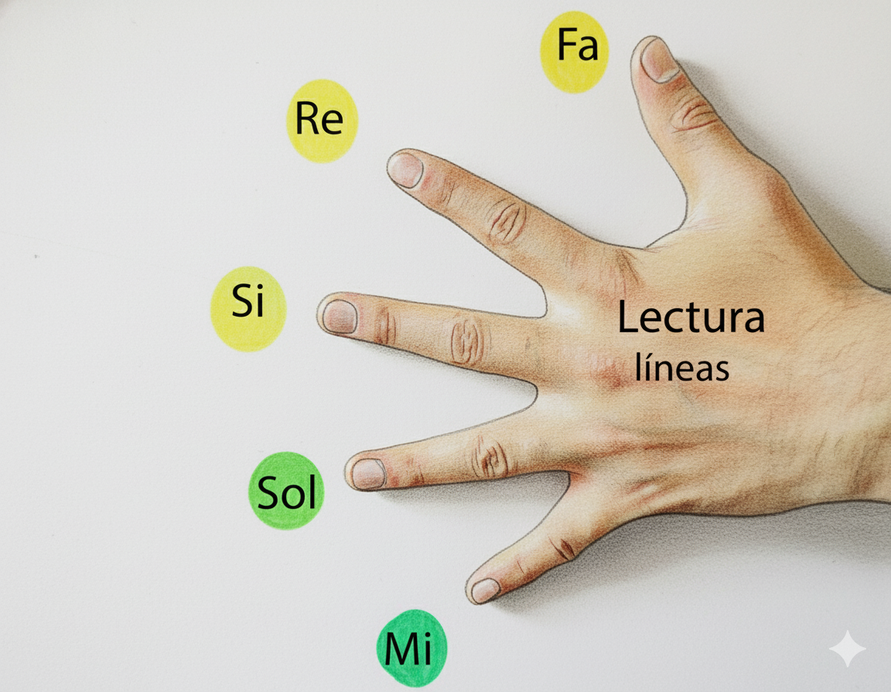

Reto Musicala Lite
Identifica las 5 notas que viven en las líneas del pentagrama.
El pentagrama tiene 5 líneas
Para no enredarse, léelas siempre de abajo hacia arriba. La línea 1 es la más bajita y la línea 5 es la más alta.
Truco anti-caos musical: empieza siempre desde abajo.
Las líneas se llaman Mi, Sol, Si, Re y Fa
En Musicala usamos la manito como una herramienta pedagógica para recordar el nombre de cada línea. Aunque no sea parte del instrumento, convierte Mi, Sol, Si, Re y Fa en una imagen fácil de guardar en la memoria.

- 5ª líneaFa
- 4ª líneaRe
- 3ª líneaSi
- 2ª líneaSol
- 1ª líneaMi
Léelo como una escalerita: Mi · Sol · Si · Re · Fa
Cuando la nota toca una línea, toma su nombre
Si una línea atraviesa la cabeza de la nota, esa nota está en esa línea. Por ejemplo: segunda línea, nota Sol.
¡Ya puedes empezar!
En este reto vas a ver notas en las 5 líneas del pentagrama. Tu misión: decir el nombre correcto de cada una.
"Recordatorio express: de abajo hacia arriba es Mi, Sol, Si, Re y Fa. 🎵"
¿Qué nota aparece en el pentagrama?
Explorador Musical
Obtuviste 0 / 5
...
¿Quieres seguir? Musicala tiene clases para tu nivel.